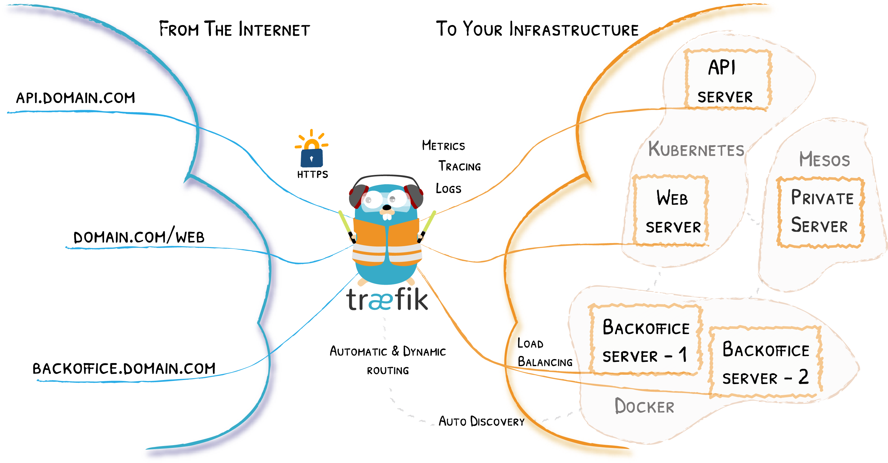
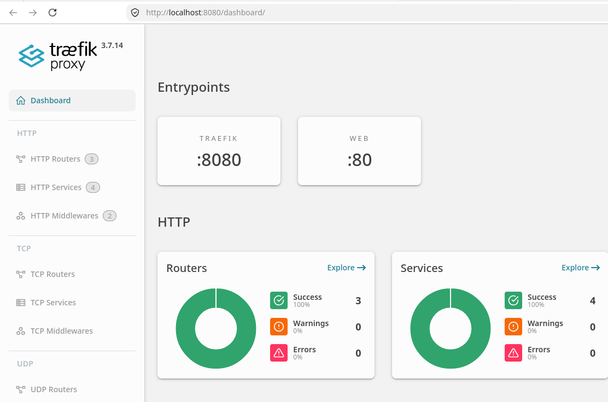

Traefik¶
Aviso: en este enunciado se usa como TLD para los ejemplos
.localhost. Si tiene la posibilidad de modificar el fichero/etc/hostspuede utilizar Private DNS Namespaces, entre ellos.intranet,.private,.homeo.lan. En prácticas posteriores se usará un dominio DNS real.
1. Introducción¶
Un proxy inverso es un servidor que se sitúa delante de uno o varios servidores web, e intercepta las solicitudes de los clientes. Esto es diferente de un proxy de reenvío, en el que el proxy se sitúa delante de los clientes. Con un proxy inverso, cuando los clientes envían solicitudes al servidor de origen de un sitio web, el servidor de proxy inverso intercepta esas solicitudes en el perímetro de la red. El servidor proxy inverso enviará entonces las solicitudes al servidor de origen y recibirá las respuestas del servidor de origen.
La diferencia entre un proxy de reenvío y uno inverso es sutil pero importante. Una forma simplificada de resumirla sería decir que un proxy de reenvío se sitúa delante de un cliente y se asegura de que ningún servidor de origen se comunique nunca directamente con ese cliente específico. Por otro lado, un proxy inverso se sitúa delante de un servidor de origen y se asegura de que ningún cliente se comunique nunca directamente con ese servidor de origen.
1.1. Traefik como proxy inverso¶
Nginx o Apache pueden cumplir perfectamente esta función, aunque hoy en día hay una nueva categoría de proxys reversos pensados para microservicios y también diseñados para “dialogar” con plataformas de contenedores como Docker, Kubernetes, etc. Este es el caso de Traefik.
Traefik is an open-source Edge Router that makes publishing your services a fun and easy experience. It receives requests on behalf of your system and finds out which components are responsible for handling them.

What sets Traefik apart, besides its many features, is that it automatically discovers the right configuration for your services. The magic happens when Traefik inspects your infrastructure, where it finds relevant information and discovers which service serves which request.
The main features include dynamic configuration, automatic service discovery, and support for multiple backends and protocols.
Traefik is based on the concept of EntryPoints, Routers, Middlewares and Services.
- EntryPoints: EntryPoints are the network entry points into Traefik. They define the port which will receive the packets, and whether to listen for TCP or UDP.
- Routers: A router is in charge of connecting incoming requests to the services that can handle them.
- Middlewares: Attached to the routers, middlewares can modify the requests or responses before they are sent to your service
- Services: Services are responsible for configuring how to reach the actual services that will eventually handle the incoming requests.
1.1.1. Edge Router¶¶
Traefik is an Edge Router, it means that it's the door to your platform, and that it intercepts and routes every incoming request: it knows all the logic and every rule that determine which services handle which requests (based on the path, the host, headers, etc.).
1.1.2. Auto Service Discovery¶¶
Where traditionally edge routers (or reverse proxies) need a configuration file that contains every possible route to your services, Traefik gets them from the services themselves.
Deploying your services, you attach information that tells Traefik the characteristics of the requests the services can handle.
2. Iniciar Traefik¶
Se parte de un ejemplo similar al que proporciona Traefik en su guía rápida.
El fichero inicial sólo contiene el servicio de nombre traefik que lanza Traefik
services:
traefik:
image: traefik:v3.7
command:
- "--api.insecure=true"
- "--providers.docker=true"
- "--entrypoints.web.address=:80"
ports:
- "80:80"
- "8080:8080"
volumes:
- /var/run/docker.sock:/var/run/docker.sock
Como el fichero compose no tiene el nombre por defecto lo debe iniciar indicando su nombre con la opción -f
traefik$ docker compose -f compose-traefik-01.yml up -d
[+] up 2/2
✔ Network traefik_default Created 0.0s
✔ Container traefik-traefik-1 Started 0.4s
traefik$
Y puede acceder al dashboard en la URL http://localhost:8080/ :

Because we explicitly enabled insecure mode, the dashboard is reachable on port 8080 without authentication. Do not enable this flag in production. You can access the dashboard at: http://localhost:8080/dashboard/
3. Descubriendo servicios¶
3.1. Ejemplo inicial: whoami¶
La guía rápida nos propone añadir un servicio web de nombre whoami que muestra información del equipo sobre el que se ejecuta ese servicio en un fichero de nombre.
En Docker, las labels son una forma de añadir metadatos a los contenedores. Traefik usa estas etiquetas para descubrir automáticamente servicios y configurar dinámicamente las rutas, puertos, reglas, etc.
En este caso el fichero añade al contenido inicial este nuevo servicio:
...
whoami:
# A container that exposes an API to show its IP address
image: traefik/whoami
labels:
# necesario si opción traefik --providers.docker.exposedbydefault=false
- "traefik.enable=true"
- "traefik.http.routers.whoami.entrypoints=web" # valor por defecto
- "traefik.http.routers.whoami.rule=Host(`whoami.md.localhost`)"
Observe la última etiqueta: Traefik descubre este nuevo servicio y lo añade a su configuración creando una ruta que enlaza la dirección whoami.md.localhost al servicio.
Detenga la ejecución del despliegue previo:
traefik$ docker compose -f compose-traefik-01.yml down -v
[+] down 2/2
✔ Container traefik-traefik-1 removed 0.4s
✔ Network traefik_default Removed 0.2s
traefik$
Y aplicamos el nuevo fichero compose-traefik-02.yml :
traefik$ docker compose -f compose-traefik-02.yml up -d
[+] up 3/3
✔ Network traefik_default Created 0.0s
✔ Container traefik-whoami-1 Started 0.3s
✔ Container traefik-traefik-1 0.5s
traefik$
Para probar que el nuevo servicio funciona basta con usar curl (o el navegador)
traefik$ curl whoami.md.localhost
Hostname: 627b4d66dd59
IP: 127.0.0.1
IP: ::1
IP: 172.19.0.2
RemoteAddr: 172.19.0.3:43468
GET / HTTP/1.1
Host: whoami.md.localhost
...
traefik$
Y para detener los servicios antes del siguinte apartado:
traefik$ docker compose -f compose-traefik-02.yml down -v
[+] down 3/3
✔ Container traefik-whoami-1 Removed 0.2s
✔ Container traefik-traefik-1 Removed 2.7s
✔ Network traefik_default Removed 0.2s
traefik$
Se ha añadido al ejemplo de la guía rápida las labels:
"traefik.enable=true": es una opción necesaria en el servicio si en la opciones de traefik estuviera activa la opción--providers.docker.exposedbydefault=false. Por defecto cuando Traefik se conecta al socket Docker expone automáticamente todos los contenedores como servicios. Es decir, si--providers.docker.exposedbydefaultestá en true (valor por defecto), cualquier contenedor puede ser accesible públicamente si tiene un puerto abierto. Contraefik.enablese controla dicha exposición a nivel de servicio."traefik.http.routers.whoami.entrypoints=web". En este caso esta opción no es necesaria ya quewebywebsecureson entrypoints ya definidos en Traefik cuando no defines explícitamente otros en la configuración (web se corresponde con el puerto 80).If not specified, HTTP routers are attached to all entry points.
the entryPoints web (port 80), websecure (port 443), traefik (port 8080) and metrics (port 9100) are created by default. The entryPoints web, websecure are exposed by default using a Service.
4. Ampliando el ejemplo inicial¶
4.1. Servicio web nginx¶
En este apartado se añade un servidor web nginx. En este caso se asocia el host web.md.localhost al servicio. El bloque a añadir en compose-traefik_03.yml sería:
nginx:
image: nginx
labels:
- "traefik.enable=true"
- "traefik.http.routers.nginx.entrypoints=web"
- "traefik.http.routers.nginx.rule=Host(`web.md.localhost`)"
Observe que hay que darle un nombre a la "ruta", y se ha usado en las labels entrypoints y rule el mismo nombre del servicio. Para activar dicho servicio:
Nuevamente Traefik descubre el servicio y lo añade a sus rutas. Ahora puede acceder a la dirección web.md.localhost (con curl o firefox)
traefik$ curl web.md.localhost
<!DOCTYPE html>
<html>
<head>
<title>Welcome to nginx!</title>
<body>
<h1>Welcome to nginx!</h1>
...
</body>
</html>
traefik$
4.2. Servidor php¶
En este apartado se añade un servidor web con PHP. Además se usa un TLD distinto (otrodominio.localhost). Y como variación el servidor web-PHP mapea un directorio local al contenedor. En el directorio está el fichero index.php que muestra la IP y nombre del host:
<?php echo 'Server IP: '.$_SERVER['SERVER_ADDR'].nl2br(" \n");?>
<?php echo 'Hostname: '.gethostname().nl2br(" \n");?>
Se añade el nuevo servicio en compose-traefik-04.yml. Observe el us ode volumes, el nombre de las rutas usando phpserver y el valor de Host:
...
phpserver:
image: php:apache
volumes:
- ./html:/var/www/html
labels:
- "traefik.enable=true"
- "traefik.http.routers.phpserver.entrypoints=web"
- "traefik.http.routers.phpserver.rule=Host(`php.otrodominio.localhost`)"
Se lanza el servicio:
alu@xd13:~/pr/traefik$ docker compose up -d phpserver
[+] Running 1/1
✔ Container p04_traefik-phpserver-1 Started 0.1s
alu@xd13:~/pr/traefik$
Y pruebe el nuevo servicio (en consola y navegador):
traefik$ docker compose -f compose-traefik-04.yml up -d
[+] up 5/5
✔ Network traefik_default Created 0.0s
✔ Container traefik-nginx-1 Started 0.4s
✔ Container traefik-whoami-1 Started 1.0s
✔ Container traefik-traefik-1 Started 0.6s
✔ Container traefik-phpserver-1 Started 0.8s
/traefik$
clases@d13:~/src/traefik$ curl php.otrodominio.localhost
Server IP: 172.19.0.4 <br />
Hostname: 514c8620406a <br />
clases@d13:~/src/traefik$
5. Escalar el servicio: balanceo de carga¶
Si desea escalar alguno de los servicios, por ejemplo último este creado, puede crear replicas con la opción --scale:
traefik$ docker compose -f compose-traefik-04.yml up -d --scale phpserver=3
[+] up 6/6
✔ Container traefik-nginx-1 Running 0.0s
✔ Container traefik-phpserver-1 Running 0.0s
✔ Container traefik-traefik-1 Running 0.0s
✔ Container traefik-whoami-1 Running 0.0s
✔ Container traefik-phpserver-2 Started 0.5s
✔ Container traefik-phpserver-3 Started 0.3s
traefik$
Si accede al servicio puede comprobar cómo responden las distintas replicas (IP e idendificador de host) ya que traefik por defecto hace balanceo de carga:
traefik$ curl php.otrodominio.localhost
Server IP: 172.19.0.5 <br />
Hostname: c4a1b1d2bbd3 <br />
traefik$ curl php.otrodominio.localhost
Server IP: 172.19.0.6 <br />
Hostname: 1eecd632b493 <br />
traefik$ curl php.otrodominio.localhost
Server IP: 172.19.0.7 <br />
Hostname: 6e9a44c9516b <br />
traefik$
6. Ejercicio propuesto¶
Añadir a traefik un servicio Wordpres en el dominio miblog.example.localhost. Tenga en cuenta que son dos servicios: wordpress y la base da datos.
7. Enlaces¶
8. Anexos¶
8.1. Usando /etc/hosts o un dominio¶
Si tiene permisos para modificar el fichero /etc/hosts podría realizar esta práctica usando nombres de dominio diferentes de .localhost. O puede usar un dominio que resuelva en este caso a la IP 127.0.0.1.
Tiene más información en los apartados de uso de DNS de los apuntes.
8.2. Fichero compose.yml completo¶
8.3. Sobre los puertos y traefik¶
Una aclaración: ¿Cómo sabe Traefik a qué puerto reenviar el tráfico?
Cuando se configura --providers.docker=true, Traefik se conecta al socket de Docker (/var/run/docker.sock) y escucha los eventos de los contenedores. Cuando arranca algún servicio, Traefik inspecciona los metadatos de esa imagen.
Específicamente, busca la instrucción EXPOSE dentro del Dockerfile original con el que se construyó la imagen. Si la imagen expone un único puerto, Traefik es lo suficientemente inteligente como para autodetectarlo y usarlo automáticamente para enrutar el tráfico.
Si la imagen expone múltiples puertos (por ejemplo un servidor web que exponga el 80 y el 443 simultáneamente), Traefik no sabrá cuál elegir. En esos casos, el enrutamiento fallaría. En este casi se utiliza la etiqueta loadbalancer.server.port.: